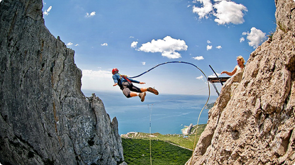
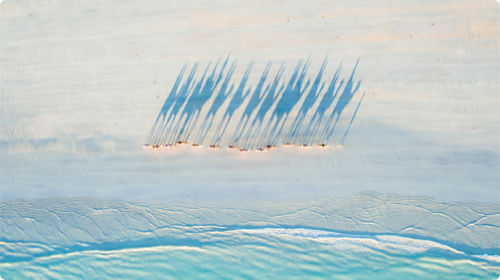

Тур
у Созополь,
Болгарія
Aquamarine hotel
$256
сонячних
днів на рік
-

Шовковий шлях
$158
Екстремальний маршрут
-

Роупджампінг
$57
Не дай Боже не любиш
$75
ЗНИЖКА
промокод
Знижка $75 готівкою при проживанні від 10 ночей
29 користувачів використали промокод
Дивіться подробиці
36,6 градусів за Цельсієм і пізна-
вальна фізика
Ніхто не замислювався чому температура людського тіла 36,6 С?
Чому не інша? Чому не дорівнює денній температурі навколишнього
простору, наприклад? Але чому так сталося? Перша причина лежить
від нас на часовій осі в минулому на відстані в кілька мільярдів
років. Саме тоді з'явилося життя.
Грубо кажучи, первинні реплікатори обгородилися захисною оболонкою
від решти океану - створивши клітини. Клітини це замкнуті водні
резервуари, в яких вся життєдіяльність проходить у водному
середовищі. І всі сухопутні організми концептуально це машини
виживання реплікаторів, мобільне (у випадку з тваринами),
сприятливе водне середовище для репродукції, оточене захисною
оболонкою від зовнішнього світу.
Шукаємо відповідь
Що цікаво, всі теплокровні функціонують у межах тієї самої області температур, що й людина. Наприклад температура у коней 37,5-38,5; у корів 37,5-39,5; курей 40,5-42,5; свиней 39,0-40,0; кішок 38,0-39,5; мавп 38,1; голубів 41,0-44,0. Відповідь лежить у царині ні, не біології. А в галузі фізики води. Річ у тім, що теплоємність води нелінійно залежить від температури. Теплоємність - це кількість енергії, яку необхідно витратити для того, щоб нагріти 1 кг речовини на 1 градус. При збільшенні температури вона ніби пікірує, як штурмовик, і підноситься вгору після проходження нижньої точки в 36,8 градусів Цельсія. В організмі людини вода становить близько 65-70%, її теплоємність величезна.
Річ у тім, що теплоємність води нелінійно залежить від температури. Теплоємність — це кількість енергії, яку необхідно витратити для того, щоб нагріти 1 кг речовини на 1 градус. При збільшенні температури вона ніби пікірує, як штурмовик, і підноситься вгору після проходження нижньої точки в 36,8 градусів Цельсія. В організмі людини вода становить близько 65-70%, її теплоємність величезна.
90% енергії, одержуваної з їжею, теплокровні тому витрачають лише на підтримання постійної температури внутрішнього середовища. На нагрівання води. Тому ця ямка, мінімум, в якому потрібно було витрачати мінімальну кількість енергії на підтримання свого стану, як атрактор, стягував на себе протягом еволюції всі "моделі" теплокровних. Фенотипи, з робочою температурою інших діапазонів, були занадто "ненажерливими" і відсіювалися відбором.
Хлорофіл та краса
Могло статися так, що небо було б отруйно-жовте, а не блакитне. Трава так само червона. Подобався б нам такий пейзаж? Чому червоний, яскраво-жовтий, створюють відчуття неспокою і не підходять для ідилічних райських картин ландшафтів як блакитний і зелений? Справа не в них, а в нас. Ми продукт еволюції, продукт середовища, в якому ми розвивалися. Що і було показано на прикладі температури тіла.
| Ім'я | Сума | Виплата | Вид оплати |
| Сергій | 2459 $ | 375 $ | Card Payment |
| Микола | 1569 $ | 582 $ | Card Payment |
| Наталія | 1759 $ | 965 $ | Card Payment |
Як знайти ці консервативні ознаки? Найчастіше розглядають 5 джерел інформації про них:
- ембріологічні дослідження;
- тератологічні дані;
- порівняльно-морфологічні дані;
- аналіз вроджених поведінкових програм (етологічні дані);
- вивчення взаємозв'язку з іншими видами.